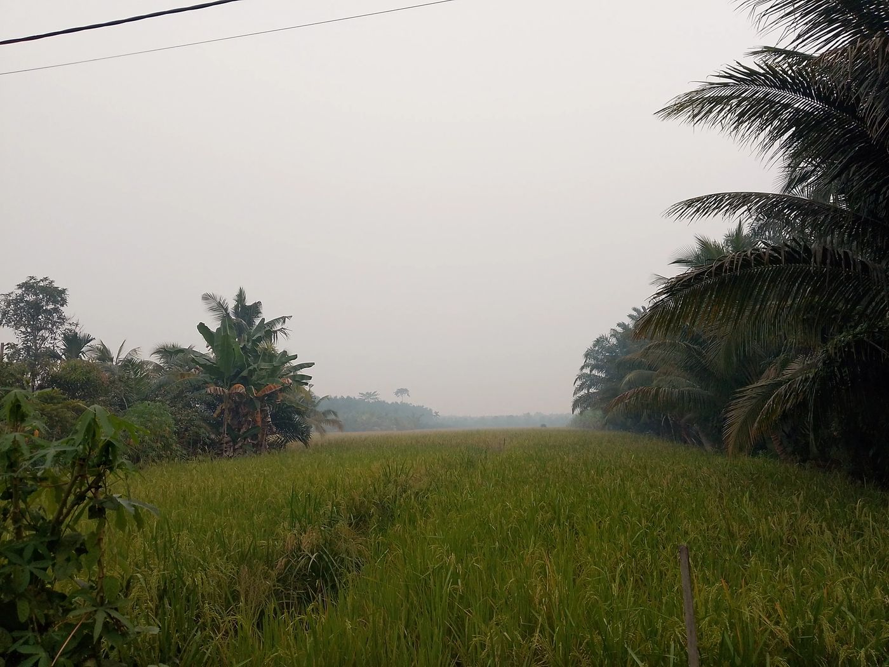
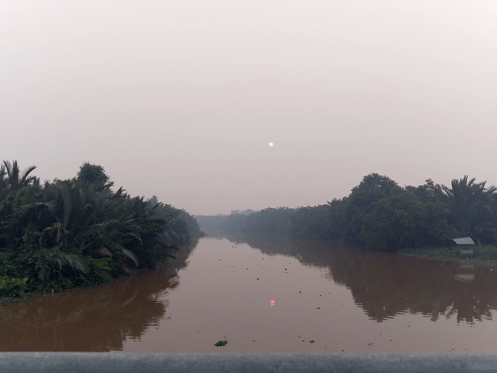
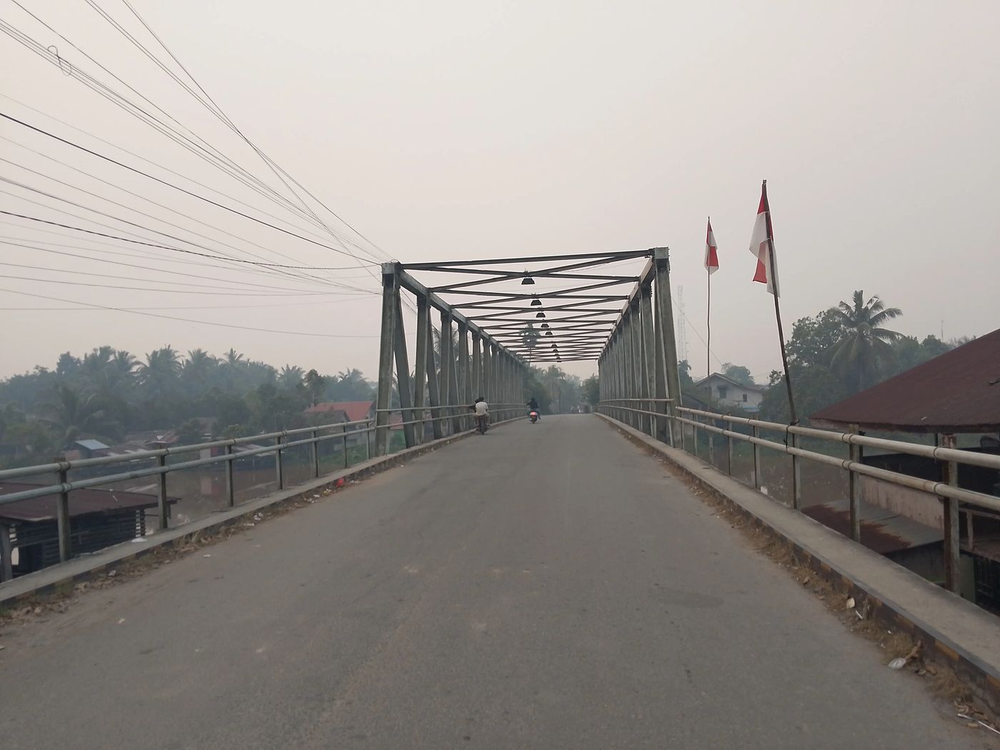
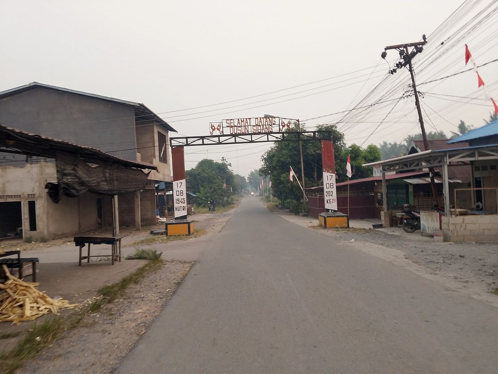

Setiap tempat berikut punya tautan Google Maps sendiri untuk memudahkan kunjungan.

Lahan sawah warga yang membentang luas, salah satu tulang punggung ekonomi desa yang agraris.
📍 Buka di Google Maps
Aliran sungai yang membelah desa, dengan pemandangan matahari terbenam yang syahdu di kala senja.
📍 Buka di Google Maps
Jembatan rangka baja yang menjadi penghubung utama antar dusun, juga titik pandang ke sungai.
📍 Buka di Google Maps
Gapura selamat datang yang menandai pintu masuk ke Dusun Sidang, salah satu dari 4 dusun di Matang Labong.
📍 Buka di Google MapsKetuk foto untuk melihat lebih besar.